OWASP Juice Shop | THM
RECON
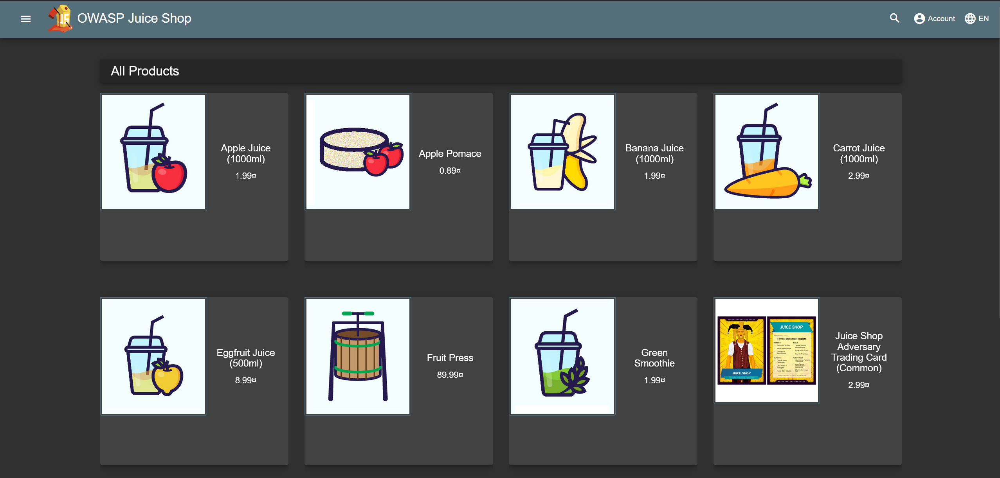Get a feel around the site by navigating and clicking everything in it. Take note of any interesting details you find.
What's the Administrator's email address?
Viewing the reviews in each items will show the user's email address.
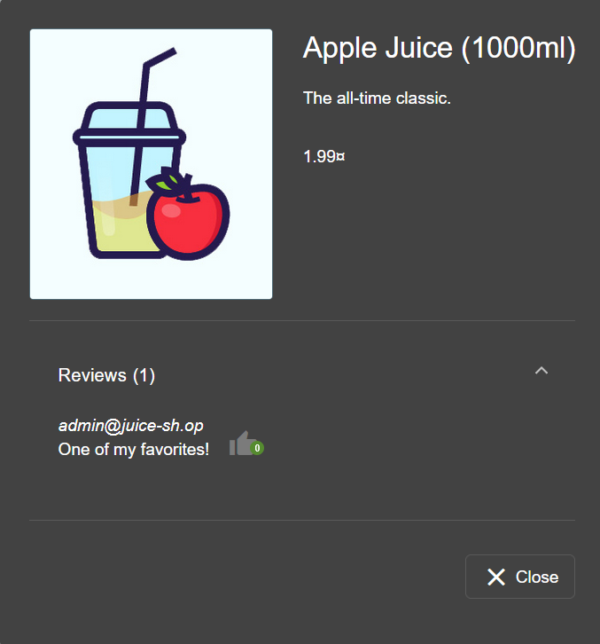What parameter is used for searching?
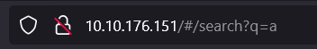Pay attention to the URL as it updates with the text you entered in the search bar.
You can see the parameter after /#/search? the letter q
What show does Jim reference in his review?
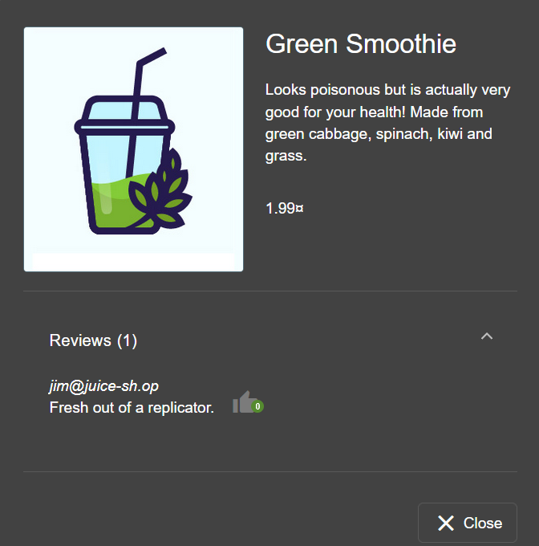Jim mentions a replicator in his review of the Green Smoothie product.
If you search what a "replicator" is we can see which show it links to.
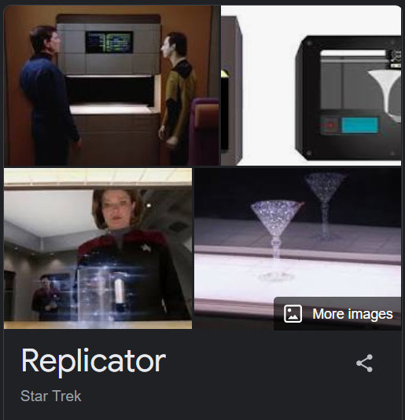INJECT THE JUICE
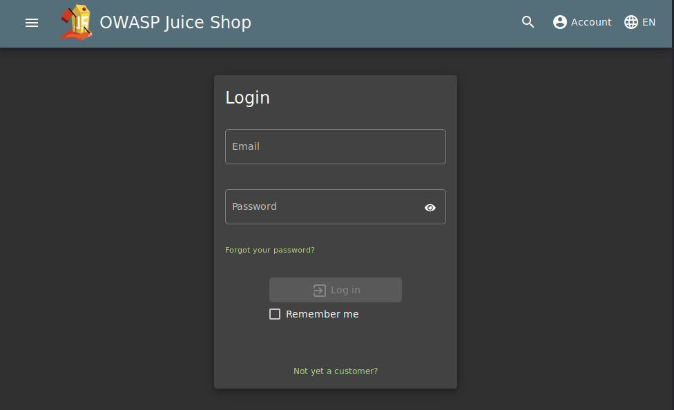Login to the admin account!
Navigate to the Juice Shop login page then enter some details to the email and password fields.
Before submitting the request. Have Burp ready to intercept the request.
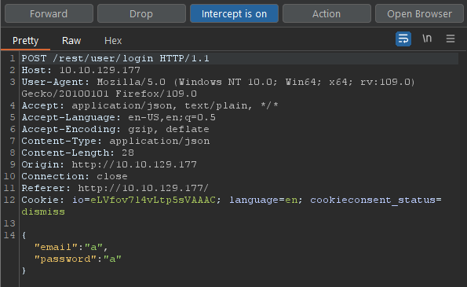Replace the character you used on the email with ' or 1=1-- and then forward the request to the server.
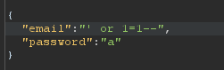Get the flag once you successfully login.
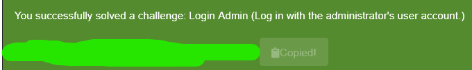Login to Bender's account!
Create another Login request using bender@juice-sh.op as the email and intercept the request with Burp.
Add the following characters to the email value '-- of the intercepted request.
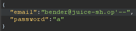Forward the request to get the flag for this task.
Who broke my lock?!
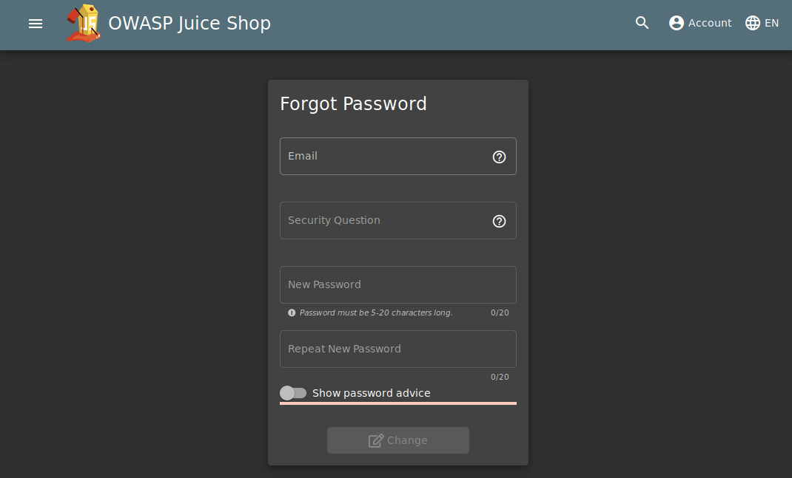Bruteforce the Administrator account's password!
Intercept a login request and this time send it througn Intruder.
Go to Payload Positions and select the Clear § button.
Place two §§ inside the password field.
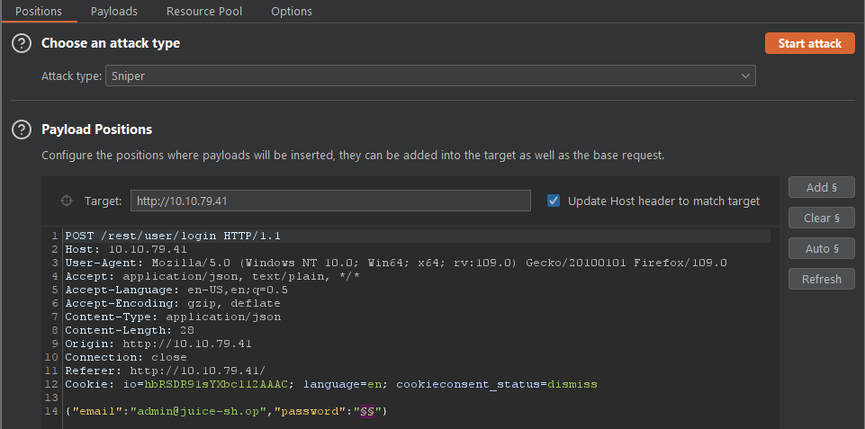We will use the best1050.txt for our payload. Once that is loaded into Burp start the attack.
Watch out for a Payload request with the status code 200. You can use that to login to the account and get the flag.
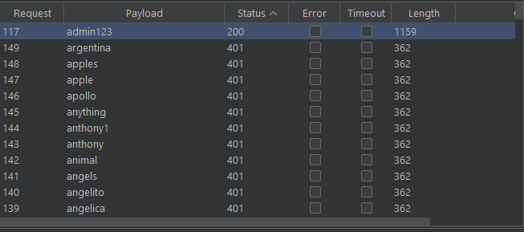
Reset Jim's password!
Let's try to break into Jim's account by exploiting the reset password mechanism.
In the previous task we figure out that Jim has something to do with Star Trek. Do a quick search to "Jim Star Trek"
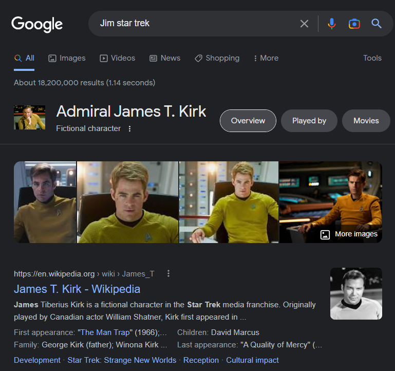The security question is asking us for the middle name of his eldest sibling. Doing further research might give us a hint.
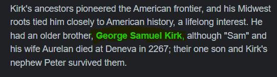Providing that answer might allow us to reset Jim's password to whatever we want.
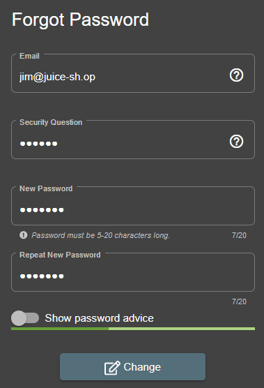Hit the change button and get the flag.
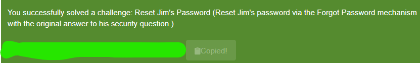AH! Don't LOOK
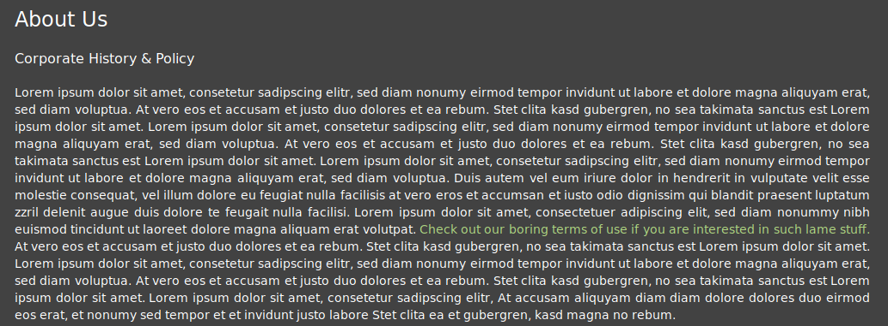Access the Confidential Document!
Navigate to the About Us page of the Juice Shop and try to find the link in the paragraph.
Clicking the link will take you to /ftp/legal.md which is just an empty page.
Backtracking to /ftp/ might reveal a page that we should not be able to go to.
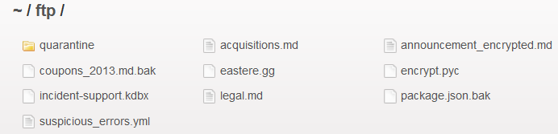You can download any files that piques your interest. Return to the home page to reveal the flag.
Login to MC SafeSearch's account!
If you did the recon you should have notice that MC SafeSearch has an account to the Juice Shop.
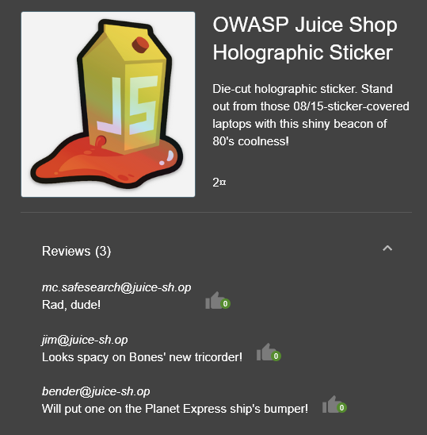His password was revealed in his song if you listen to it.
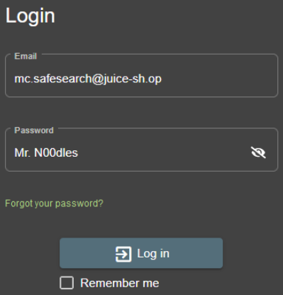Login to his account to get the flag.
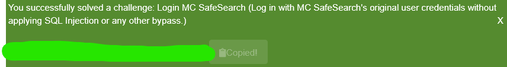Download the Backup file!
Did you try to download the files from the /ftp/ page? You might have tried to download the package.json.bak file but got an error like so.
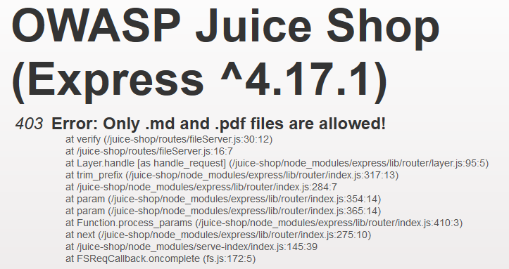We need to inject a Poison Null Byte to the URL to download the file.
A Poison Null Byte is simply just %00. But we need to encode it into a URL encoded format to use it
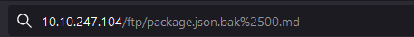Once you download the file return to the home page to get the flag.
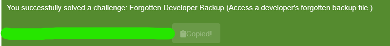Who's flying this thing?

Access the administration page!
Inspect the Juice Shop from you browser and go to the Debugger tab (Sources if you are using Chrome). Look for a main.es2015.js file.
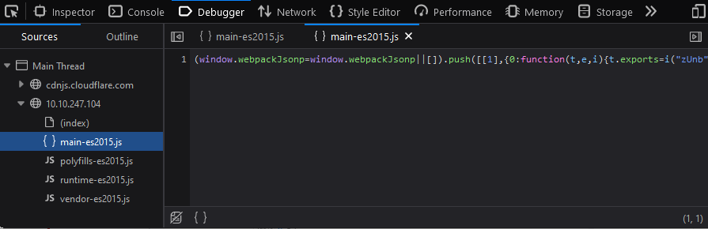Click the {} button to make the file more reader freiendly.
Search for the term admin.
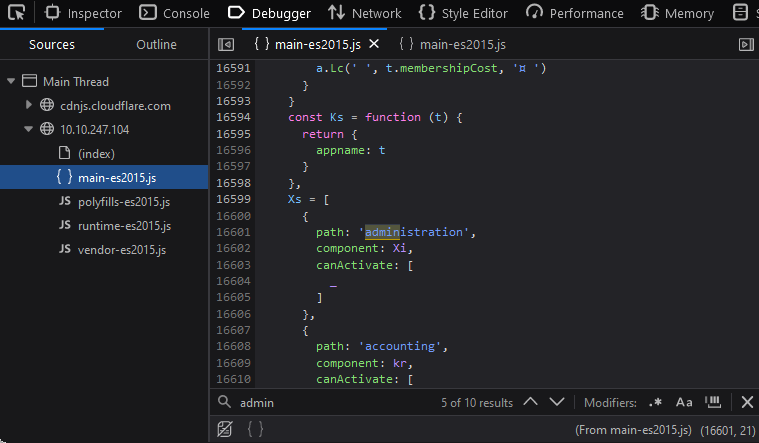What we want is the path: 'administration'. This hints to the page /#/administration but we need an Admin account to view the page.
Login to a Admin account then navigate to /#/administration to get the flag.
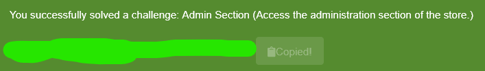View another user's shopping basket!
Login as the admin and click on Your Basket. Have Burp intercept the request.
Forward the request until you see a GET /rest/basket/1 HTTP/1.1
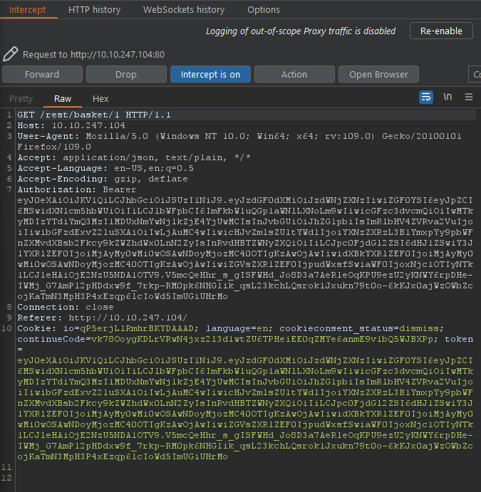Edit the request by changing the 1 to a 2 then forward the request.
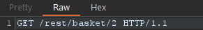The page will now show you the basket of UserID 2. This can be done to other UserID as well provided that they have one.
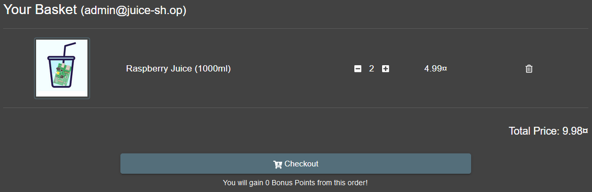 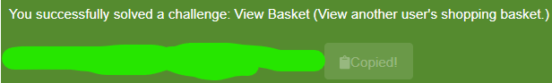Remove all 5-star reviews!
Using the admin account navigate to the /#/administration page.
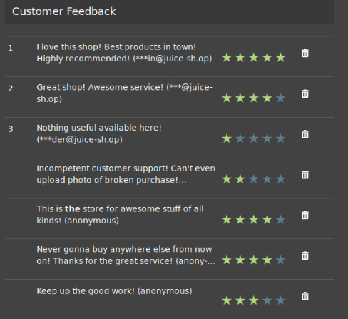Delete the 5-star review to get the flag.
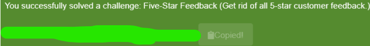Where did that come from?
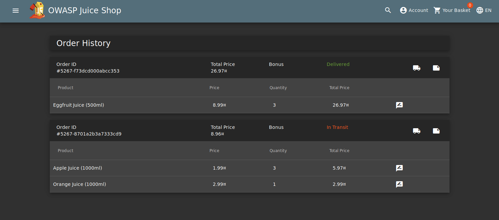Perform a DOM XSS!
On the search bar type
This will trigger an alert and reveal the flag.
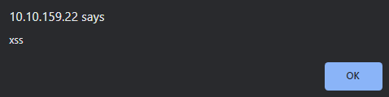 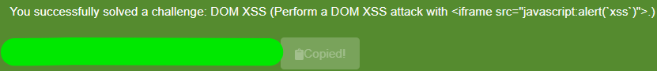Perform a Persistent XSS!
Login to the admin account and the navigate to the Last Login IP page under the Privacy & Security options.
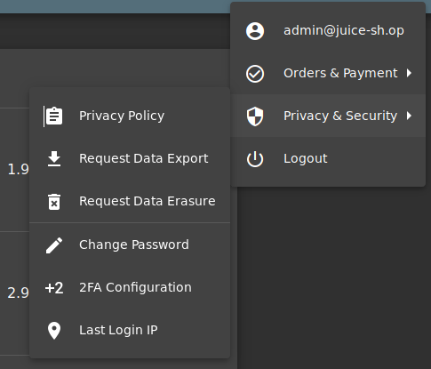Logout the account and have Burp intercept the logout request.
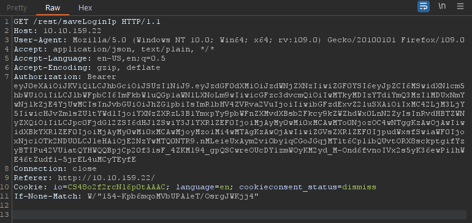Head to the Inspector and add a new Request Header.
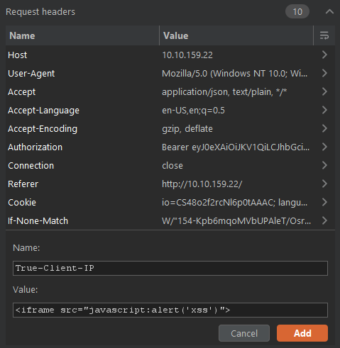Forward the request to the server once you added the new Request Header.
We should see the XSS alert when we navigate to the Last Login IP page again.
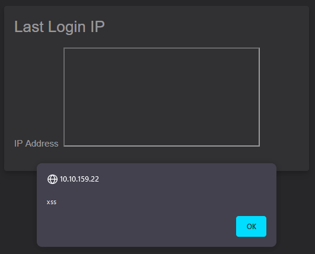Perform a Reflected XSS!
Using the admin account, go to Order History page.
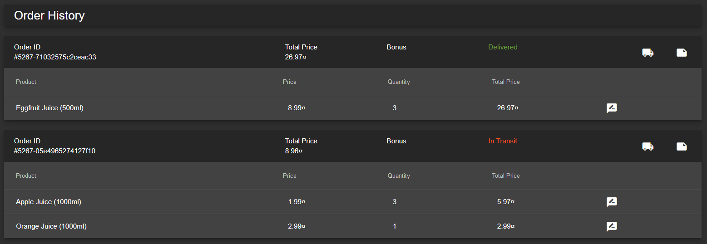Click the truck icon, it should bring us to the Track Result page.
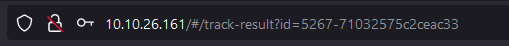Replace the id value with the iframe XSS.
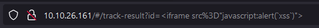Submitting the URL and refreshing the page should give us an alert and a flag.
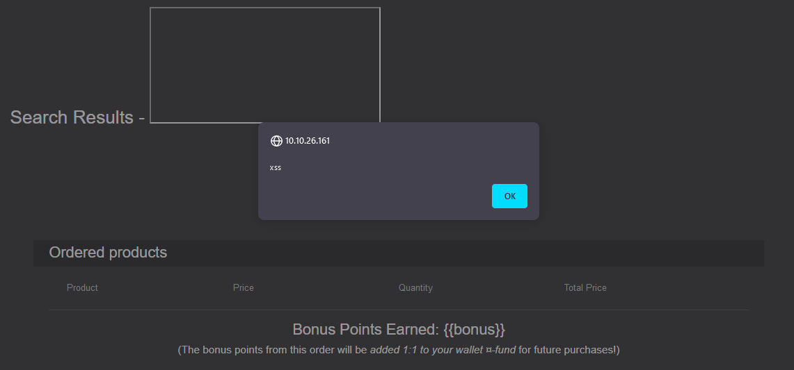 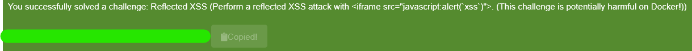Web Enumeration | THM
Practical: Gobuster
Run a directory scan on the host. Other than the standard css, image and js directories, what other directories are available?
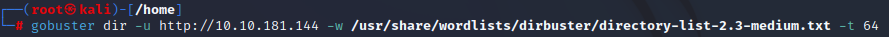
Run a directory scan on the host. In the C****** directory, what file extensions exists?
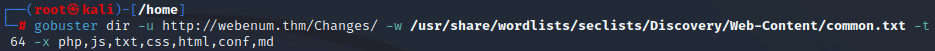 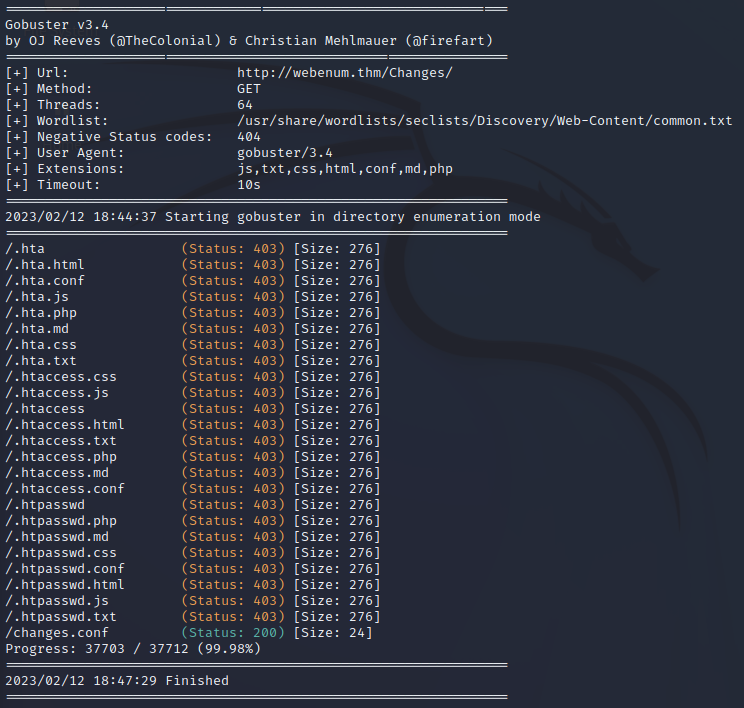There's a flag out there that can be found by directory scanning! Find it!
The easier way to do this is by navigating through the directories we found in the previous scans.
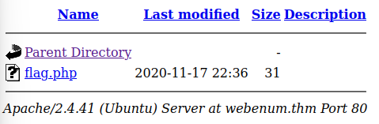There are some virtual hosts running on this server. What are they?
Since Gobuster is not giving me the result that I wanted, I decided to look for a way around the problem and find that ffuf works. So I used that for this problem.

There's another flag to be found in one of the virtual hosts! Find it!
The code above will perform a Gobuster scan against both vhost at once.
Once you got the path you can just browse to it to see the flag.
Practical: WPScan
Enumerate the site, what is the name of the theme that is detected as running?
Enumerate the site, what is the name of the plugin that WPScan has found?
Enumerate the site, what username can WPScan find?
Construct a WPScan command to brute-force the site with this username, using the rockyou wordlist as the password list. What is the password to this user?
Practical: Nikto
What is the name & version of the web server that Nikto has determined running of port 80?
There is another web server running on another port. What is the name & version of this web server?
You can do a nmap scan first to see which ports are open.
Now you can scan it with nikto.
What is the name of the Cookie that this JBoss server gives?
Upload Vulnerabilities | THM
Challenge
Head over to jewel.uploadvulns.thm and try to get the flag in /var/www.
Note: Not all webserver have PHP backend.
Recon:
Start a directory scan using Gobuster.
While Gobuster is scanning go to the homepage and try to inspect it with the Debugger. Look for javascript files that acts as the filter for the files.
Also check what web server the site is using.
The Gobuster scan gives us two pages we can use for the attack.
Test run: Uploading an innocent file.
We know that the page accept jpeg files. So we'll try to upload this file.
Do another directory scan to see where our file is uploaded
If we go to the /content/image-file-name.jpg we can see that our file is successfully uploaded.

Uploading a malicious file.
Using Burp intercept the response for the upload.js
Modify the response to bypass the client-side filter.
Try to upload a malicious file, and find its name by scanning the content directory.
Start your Netcat listener and once you found the name of you shell go to the /admin page and try to access the file from there.
See if Netcat connects to the shell and then navigate to where the flag is